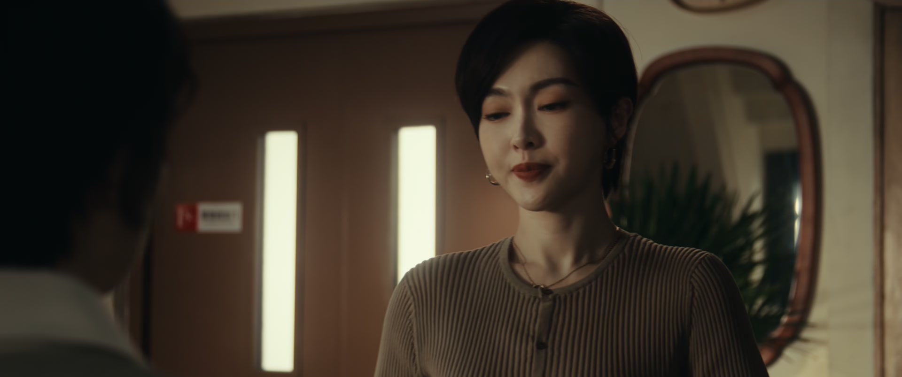
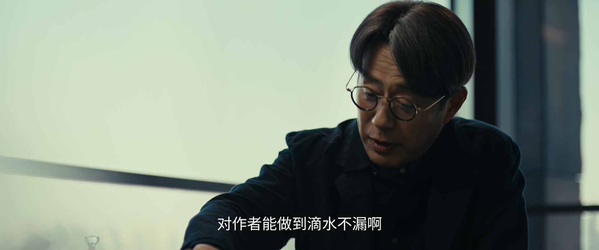
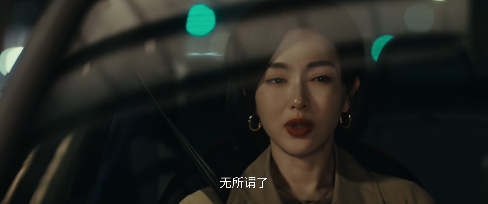
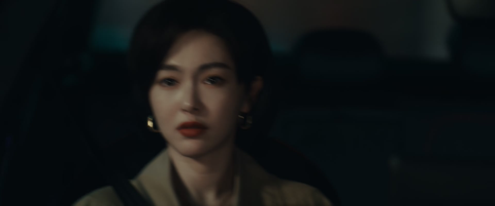
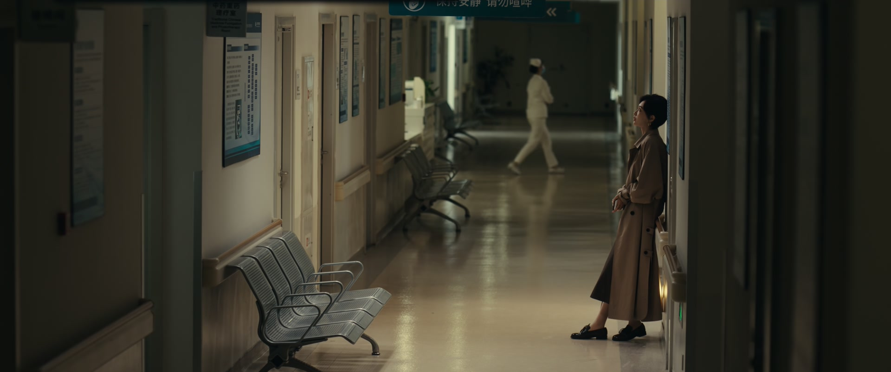
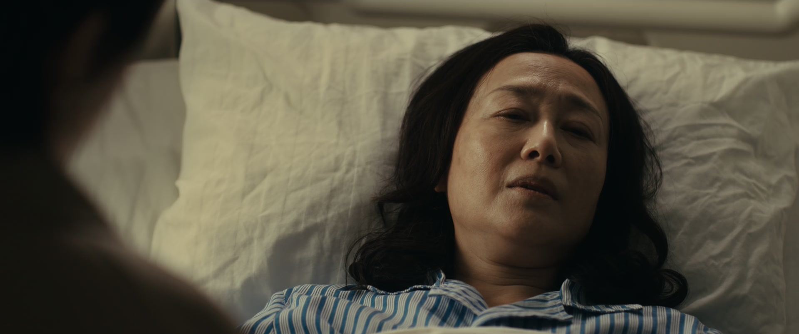
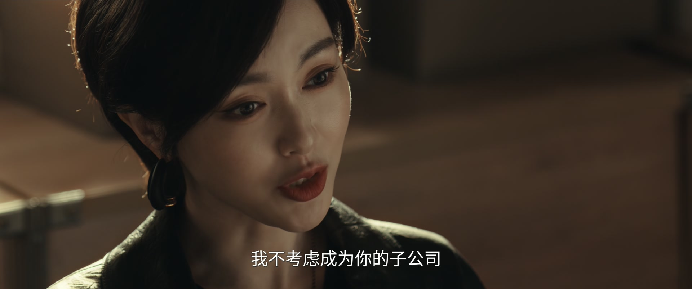
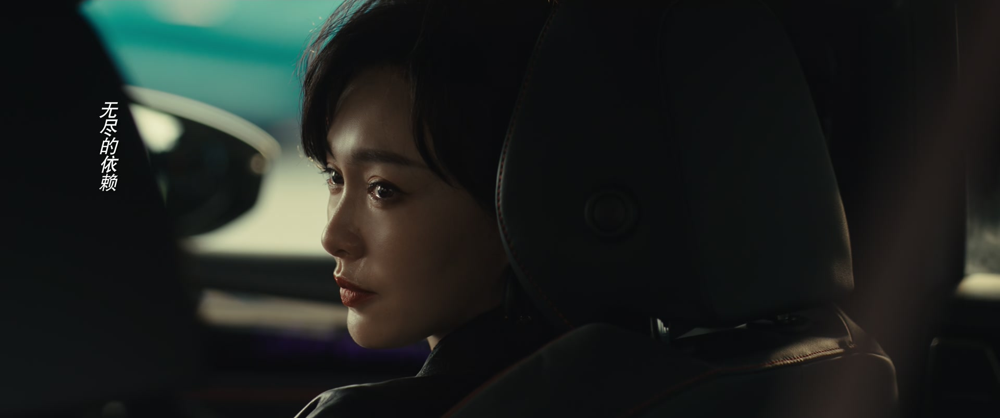

怀疑可以当面求证，但不能冤枉真心待你的人
情境：展翘误以为辞职的员工是内鬼，对质后当面道歉。
遇到这种情况，可以这样做
- 猜疑要落地到对质，而不是背地里给人定罪。
- 冤枉错了，认错要比面子重要。
- 人心散了，团队就真散了。

Drama Recap · 剧情图文总结
第 27 集 · 迟来的团圆
展翘妈妈晕倒送医，何韩在急诊室陪了一夜，妈妈却固执地拒绝治疗；赵兰心带着律师上门「帮茞星东山再起」，转头对孤烟摊牌「茞星里面有我的人」；而展翘的爸爸，终于决定搬回家陪妈妈住——「这一刻，似乎来得太晚了。」
凌晨的急诊室外，何韩坐在走廊的塑料椅上等病理结果。展翘的妈妈躺在床上，固执地说「我不治疗，送我回家」。而城市的另一头，赵兰心带着律师上门：「我是来帮你们茞星东山再起的。」她告诉孤烟：茞星里面有我的人。所有的暗流，在同一夜涌向同一个方向。
第 27 集，家庭与战场，一起摊开。 展翘先送走一个辞职的员工——她怀疑过团队泄密，也当面道了歉：「我不希望是你，但不希望是你们其中的任何一个人。」江湖再见。但真正的风暴在后面：范叔的律师看完了孤烟与展翘的协议，「有条款就有漏洞」，只要孤烟咬定展翘履行不到位，就能少赔钱；官宣「孤烟就是三三」，把他捧成比肩闪灵骑士的传奇。
剧里的鸡毛蒜皮，往往是人生的缩影。这些情节不只是故事——当你在现实中遇到同样的处境时，它们能提醒你：先做什么、别做什么、怎么说才有效。
情境：展翘误以为辞职的员工是内鬼，对质后当面道歉。
情境：范叔和律师钻合同漏洞，设计少赔钱、官宣孤烟是三三。
情境：展翘妈妈病倒，何韩放下一切送她去医院。
情境：展翘妈妈拒绝化疗：「太麻烦了，你们两个人是最怕麻烦的人。」
情境：赵兰心提出收购，展翘以「我不需要谁来为我分担」拒绝。
情境：展翘爸爸一早去医院陪护，并决定搬回家与妈妈同住。

展翘把即将辞职的员工叫来对质：公司的新人作者名单、她和何韩的照片，是谁泄露给了范叔或赵兰心？员工矢口否认：「我平时工作跟外面对接的事很多，但这种事我是真的没做过。」
展翘想明白了，当面道歉：「我不希望是你，但不希望是你们其中的任何一个人。」她叮嘱员工辞职的事先不要声张，免得影响军心。员工承诺把手头工作整理好交接，「江湖再见」。
关键台词 · KEY QUOTES

范叔与律师密谋。律师把孤烟和展翘的协议翻了个遍：「有条款就有漏洞。」只要孤烟一口咬定展翘履行义务不到位——隐瞒发展同类型作者、结算版权收益存在逾期付款，就能少赔钱。
范叔更狠：不用说服孤烟，谈成了直接官宣「孤烟就是三三」，让榜单最高位的两部作品都挂在他名下，「那他就成了传奇了，是可以比肩闪灵骑士的传奇」。
关键台词 · KEY QUOTES
何韩的朋友找上门：「虽然你已经离开了江湖，但是江湖上还有你的传说。」他劝何韩别错过游戏公司的高价——「卖出去的小说泼出去的水，这时候公司更重要」。
何韩纠正他：「不是没谈成没卖出去，是不卖了。」因为展翘的老板坚持保留原小说的主体人物和创作方向。朋友笑她「有毛病」，何韩却记得自己当时站在展翘那边，「我觉得挺热血挺感人的」。展翘则在另一边判断：那些针对茞星的「罪状」，不像是孤烟的手笔，更像范叔和赵兰心的设计。
关键台词 · KEY QUOTES

何韩开着专车在路上「巧遇」展翘，拉她上车兜风。展翘劝他答应游戏公司开的条件——「现金到手，落袋为安」。
何韩却拒绝：「我这次一点都没有考虑你的感受。我这次是想到我自己。我今天下午感受到了他对我坚守的冒犯，所以我就拒绝他了。」他反过来逗她：公司要是撑不下去，大不了跟你一起开专车，「我怎么就开不了了，我可以开白天呢。」
关键台词 · KEY QUOTES

展翘接到爸爸的电话：妈妈肚子疼晕倒了，救护车已经送进急救。她让何韩送她去医院，却在门口犹豫：「我是怕我爸看到你在开专车，他如果知道……他肯定要问一大堆问题。」
何韩只说一句：「只要你妈身体没事，我怎么样都可以。」展翘让他把自己放在医院门口，跟爸爸说他有事先走了。
关键台词 · KEY QUOTES

展翘赶到医院，爸爸告诉她：「医生说你妈这次，怀疑胃里长了东西，而且这个东西不太好。」妈妈还昏迷着，爸爸却要先走。
展翘拦住他：「都这个时候了，你不能等她醒过来之后，起码让她能够看到你，能够跟你说上几句话。」爸爸还是走了。掌珠和佑森说要过来陪她，她谢绝：「总是得去面对的，怎么着都是需要撑过去的。」
关键台词 · KEY QUOTES

何韩收车后来到病房：「还没走，没什么生意，我就来陪你一会儿。」医生把家属叫出去：「准确诊断要等病理结果。初步判断像是淋巴瘤，情况不是特别乐观，之后很可能需要化疗。」
妈妈醒来，展翘如实告诉她胃里长了东西、已经切除干净、还需化疗巩固。妈妈却固执地拒绝：「我不做，我不治疗，你们送我回家就可以了。太麻烦了。」何韩劝她：「要说麻烦，我才是最麻烦的那个。您要是不麻烦，我都嫌自己难受啊。」
关键台词 · KEY QUOTES
何韩送展翘回家，到了楼下叫她「醒醒，快回去睡觉吧」。展翘问：「你今天什么时候再去医院？」何韩说尽量早点把公司的事情处理好就过去，「那有什么事给我打电话，我随时」。
车灯熄灭，楼道里剩下一个人的脚步声。
关键台词 · KEY QUOTES

赵兰心亲自上门：「我是来帮你们茞星东山再起的。」她直言展翘财务压力大、《唐遥》版权又谈崩了，「现在你唯一值钱的牌，就是你林展翘本人跟孤烟」，提出并进她的公司、保留工作室名称、孤烟当头号种子、顶麒网资源随行。
展翘一句「我不需要谁来为我分担，尤其是你，搞不好还是更大的压力」顶了回去，又点破：「你不是想要跟我合作，你是想要带走孤烟。」赵兰心承认，但撂下狠话：顶麒网的律师正在跟孤烟谈，晚一点会代表他来谈。
关键台词 · KEY QUOTES
赵兰心把孤烟单独叫到一边，先走感情牌：「我也是从你这个年纪过来的，我知道你在犹豫什么。儿女情长，对不对？」她劝孤烟想清楚：如果林展翘只把他当成替代品，「你说你这是何必呢」。
接着是威胁：「茞星里面有我的人，所以你跟茞星的往来细节，我基本上都了解。」她给孤烟一个选择题：如果坚持跟林展翘同生共死，就打她电话、她把所有推动全部叫停；如果沉默，就继续。「你不用说话就可以了。」
关键台词 · KEY QUOTES
何韩在医院告诉展翘：护士说展翘爸爸一早八点就来陪护了。展翘要上楼，张佑森拦住她：「你先别上去，让他们多聊一会儿。」展翘远远看着爸妈，感慨这是自己从小就想象过的一幅画面，现在终于想象成真了，「但这一刻，似乎来得太晚了」。
张佑森又带来消息：展翘爸爸决定搬回去跟妈妈一起住，等妈妈出院，由他自己当面告诉她。何韩还替展翘请了肿瘤专家看化验单，「说不定有更好的治疗方案」。
关键台词 · KEY QUOTES

展翘帮何韩买新居的日用品，电话里他报来地址：「到时候直接寄给你。」何韩又托她转交办好的签证资料，「我妈要过来，你把这个给她。签证已经办好了，资料都在里面。」
片尾独白响起：「再多浪漫故事的人，生活中未必知道怎么表达爱和关心。我和何韩可能都是这样的人。我们心照不宣地关心着对方关心的人，替对方表达着无法开口的爱。我对何韩的家人、何韩对我的父母，都是如此。」
关键台词 · KEY QUOTES
送走辞职员工并道歉；妈妈病倒后医院、公司两头跑；拒绝赵兰心的收购；站在病房门口，看着父母迟到三十多年的团圆。
以「不卖了」的姿态拒绝游戏公司；连夜陪护展翘妈妈，劝她接受治疗；托展翘替母亲办签证、买日用品。
上门收购展翘的工作室被拒；单独对孤烟摊牌「茞星里面有我的人」，用沉默即默认的选择题逼他站队。
被范叔和赵兰心两头施压：一边要官宣他是三三，一边用内鬼威胁他选择；他沉默，没有回答。
陪展翘熬过医院之夜；请肿瘤专家看化验单；转告她爸爸要搬回家住的消息，让她「让他们多聊一会儿」。
与律师密谋钻合同漏洞，定下「官宣孤烟就是三三」的传奇计划。
与张佑森一起守在展翘身边，夜里要过来陪她；提醒她「总是得去面对的」。
展翘送别辞职的员工，一句「我不希望是你们其中的任何一个人」，把内鬼的悬念留得更深。
范叔与律师密谋，要把孤烟捧成比肩闪灵骑士的传奇——一条通往深渊的捷径。
展翘妈妈拒绝化疗，何韩一句「我才是最麻烦的那个」，把一个家重新黏在一起。
赵兰心上门收购，被展翘一句「搞不好还是更大的压力」顶了回去。
赵兰心对孤烟亮出内鬼这张牌，让沉默变成一种表态。
爸爸清晨八点守在病床前，决定搬回家——「这一刻，似乎来得太晚了」。
范叔铁了心把孤烟架上「三三」的神坛，孤烟最终会如何选？
赵兰心自称「茞星里面有我的人」，到底是谁在两头通吃？
沉默即默认的选项摆在孤烟面前——他没有回答，就是答案的一半。
淋巴瘤初判，化疗在即，展翘妈妈那句「我不治疗」会不会成为新的心结？
办好的签证、即将到来的母亲——何韩的新生活线正在铺开。